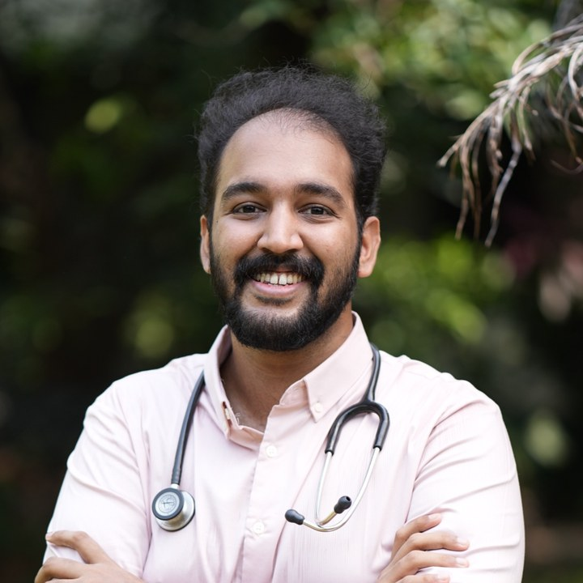
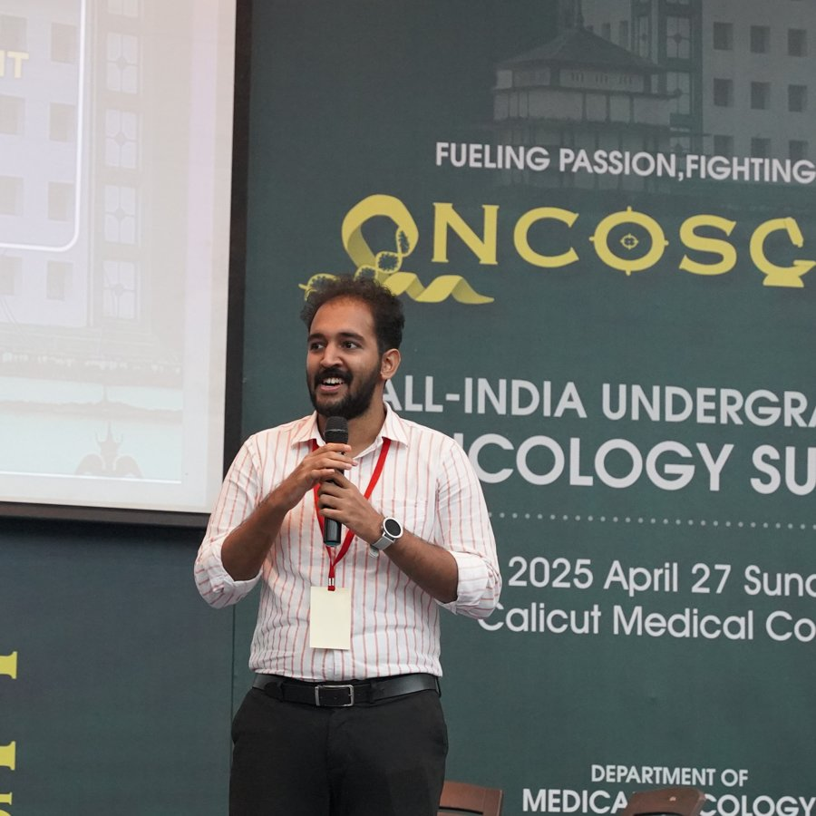
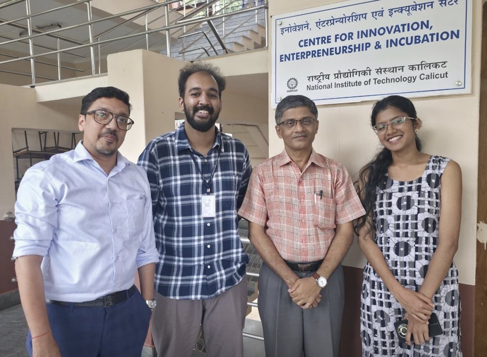

Medicine meets MedTech.
Medinn is the practice of Dr. Sidharth Narayanan, building edtech growth and MedTech ecosystems across Malabar.



The network
One practice, nineteen organizations.
Select a logo to see the role, the years and the proof. Connected organizations light up together.
Where clinical education meets MedTech.
Medinn reaches medical students at scale and puts colleges, engineers, makers and startups at one table, to grow Malabar's biomedical ecosystem.
Edtech
- Cytokine Lectures
- COO. 50+ college communities over 3+ years, and close to ₹50L in lifetime revenue that Medinn helped build.
- MEDPG Calicut
- Outreach lead. Podcasts, posters, and the Evolve 60-day MCQ campaign.
- KNYA
- Distribution partner across Kerala campuses.
- Doc Tutorials and Doctor Bhatia's
- A national medicine quiz, and campus marketing for NEET PG.
MedTech
- IEDC GMC Kozhikode
- Early advocate and student lead. Launched in May 2026.
- Interdisciplinary hackathons
- Cochin in 2025 and Kozhikode in 2026, with TinkerHub and TinkerSpace.
- NIT Calicut and Calicut Medical College
- Projects that put medicine and engineering on one team.
- Repair Café and Medical Device Deconstruction Lab
- Clinicians and makers taking devices apart together.
Ecosystem partner, medicine and engineering bridge, edtech and MedTech systems builder, speaker, panelist, generalist.

The Handover.
From MBBS to house surgeon
A two-day offline internship bootcamp for new doctors across Kerala, held on 20 and 21 September 2026 beside Calicut Medical College. Medinn conceptualized, ran, marketed and executed it for Cytokine Lectures.

2020 to now
Timeline.
Selected work.
Services.
Five ways to work with Medinn, each backed by projects already delivered.
Clinical grounding
Research and credentials.
Publications
Nutritional Assessment of Cancer Patients: A Study from a Tertiary Cancer Care Center in Kerala (2026). Metastatic Solitary Fibrous Tumor of Parapharyngeal Region: A Case Report with Review of Literature (2025). Both in the Indian Journal of Medical and Paediatric Oncology.
Peer reviewer for JMIRx Med (2024). Co-author of the Cytokine Prescription Guide, Edition 1.
KUHS Research Appreciation Award, 2024
A community medicine project on risk factors for non-communicable diseases among medical students in North Kerala. Third prize for the paper presentation at MedMeet 3.0. Unpublished.

Speaking
Panelist on the HealthTech track at the IEDC Summit, NIT Calicut, in October 2024. Speaker at the AI in Healthcare Virtual Global Summit in December 2024. Two-time University Debate and Extempore Champion.

Certifications
Introduction to Systematic Review and Meta-Analysis, Johns Hopkins University via Coursera (July 2024). Bioentrepreneurship Basic Certification, Kerala Biotechnology Commission. Bio-entrepreneurship Advanced Certification, a 5-day residential course with IIT Palakkad Technology I-Hub Foundation (October 2025).

Poster sessions
All Kerala community medicine poster competition, including the KUHS award project. Training workshop on LGBTQIA+ affirmative healthcare, Sangath iHEAR AffirmCare project (October 2024).
Juvenile justice elective
A 2024 and 2025 case study on the juvenile justice system in Kozhikode and the role of NGOs in reducing recidivism, presented at poster sessions. Unpublished. It reflects a wider interest in sociology, community medicine and mental health.
Have a healthcare project in mind?
Tell me what you are launching, running or scaling, and I will say whether Medinn is the right fit.